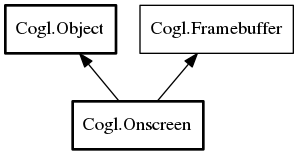

- Onscreen
- Onscreen
- add_dirty_callback
- add_frame_callback
- add_resize_callback
- add_swap_buffers_callback
- get_buffer_age
- get_frame_counter
- get_resizable
- hide
- remove_dirty_callback
- remove_frame_callback
- remove_resize_callback
- remove_swap_buffers_callback
- set_resizable
- set_swap_throttled
- show
- swap_buffers
- swap_buffers_with_damage
- swap_region
Onscreen
Object Hierarchy:
Description:
Namespace: Cogl
Package: doc
Content:
Creation methods:
- public Onscreen (Context context, int width, int height)
Instantiates an "unallocated" Onscreen framebuffer that may be configured before later being allocated, either implicitly when it is first used or explicitly via allocate.
Methods:
- public OnscreenDirtyClosure add_dirty_callback (OnscreenDirtyCallback callback, UserDataDestroyCallback? destroy)
Installs a
callbackfunction that will be called whenever the window system has lost the contents of a region of the onscreen buffer and the application should redraw it to repair the buffer. - public FrameClosure add_frame_callback (FrameCallback callback, UserDataDestroyCallback? destroy)
Installs a
callbackfunction that will be called for significant events relating to the given this framebuffer. - public OnscreenResizeClosure add_resize_callback (OnscreenResizeCallback callback, UserDataDestroyCallback? destroy)
Registers a
callbackwith this that will be called whenever the this framebuffer changes size. - public uint add_swap_buffers_callback (SwapBuffersNotify callback)
Installs a
callbackfunction that should be called whenever a swap buffers request (made using swap_buffers) for the given this completes. - public int get_buffer_age ()
Gets the current age of the buffer contents.
- public int64 get_frame_counter ()
Gets the value of the framebuffers frame counter.
- public Bool get_resizable ()
Lets you query whether this has been marked as resizable via the set_resizable api.
- public void hide ()
This requests to make this invisible to the user.
- public void remove_dirty_callback (OnscreenDirtyClosure closure)
Removes a callback and associated user data that were previously registered using add_dirty_callback.
- public void remove_frame_callback (FrameClosure closure)
Removes a callback and associated user data that were previously registered using add_frame_callback.
- public void remove_resize_callback (OnscreenResizeClosure closure)
Removes a resize
callbackanduser_datapair that were previously associated with this via add_resize_callback. - public void remove_swap_buffers_callback (uint id)
Removes a callback that was previously registered using add_swap_buffers_callback.
- public void set_resizable (Bool resizable)
Lets you request Cogl to mark an this framebuffer as resizable or not.
- public void set_swap_throttled (Bool throttled)
Requests that the given this framebuffer should have swap buffer requests (made using swap_buffers) throttled either by a displays vblank period or perhaps some other mechanism in a composited environment.
- public void show ()
This requests to make this visible to the user.
- public void swap_buffers ()
Swaps the current back buffer being rendered too, to the front for display.
- public void swap_buffers_with_damage (int rectangles, int n_rectangles)
Swaps the current back buffer being rendered too, to the front for display and provides information to any system compositor about what regions of the buffer have changed (damage) with respect to the last swapped buffer.
- public void swap_region (int rectangles, int n_rectangles)
Swaps a region of the back buffer being rendered too, to the front for display.
Inherited Members:
All known members inherited from class Cogl.Object

All known members inherited from interface Cogl.Framebuffer
- error_quark
- allocate
- cancel_fence_callback
- clear
- clear4f
- discard_buffers
- draw_attributes
- draw_indexed_attributes
- draw_multitextured_rectangle
- draw_primitive
- draw_rectangle
- draw_rectangles
- draw_textured_rectangle
- draw_textured_rectangles
- finish
- frustum
- get_alpha_bits
- get_blue_bits
- get_color_mask
- get_context
- get_depth_bits
- get_depth_texture
- get_depth_texture_enabled
- get_depth_write_enabled
- get_dither_enabled
- get_green_bits
- get_height
- get_modelview_matrix
- get_projection_matrix
- get_red_bits
- get_samples_per_pixel
- get_viewport4fv
- get_viewport_height
- get_viewport_width
- get_viewport_x
- get_viewport_y
- get_width
- identity_matrix
- orthographic
- perspective
- pop_clip
- pop_matrix
- push_matrix
- push_primitive_clip
- push_rectangle_clip
- push_scissor_clip
- read_pixels
- read_pixels_into_bitmap
- resolve_samples
- resolve_samples_region
- rotate
- rotate_euler
- rotate_quaternion
- scale
- set_color_mask
- set_depth_texture_enabled
- set_depth_write_enabled
- set_dither_enabled
- set_modelview_matrix
- set_projection_matrix
- set_samples_per_pixel
- set_viewport
- transform
- translate